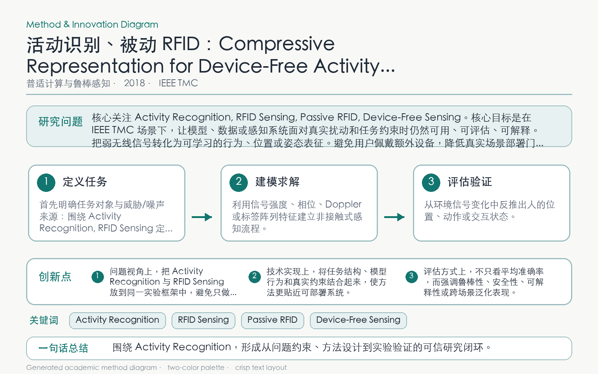

Problem
解决的问题
这篇论文属于“普适计算与鲁棒感知”方向，核心关注 Activity Recognition, RFID Sensing, Passive RFID, Device-Free Sensing。它要解决的不是单纯提升一个指标，而是在 IEEE TMC 场景下，让模型、数据或感知系统面对真实扰动和任务约束时仍然可用、可评估、可解释。把弱无线信号转化为可学习的行为、位置或姿态表征。避免用户佩戴额外设备，降低真实场景部署门槛。面向日常活动识别中的噪声、个体差异和在线变化。
Pervasive Computing and Robust Sensing · 2018 · IEEE TMC
Compressive Representation for Device-Free Activity Recognition with Passive RFID Signal Strength
Problem
这篇论文属于“普适计算与鲁棒感知”方向，核心关注 Activity Recognition, RFID Sensing, Passive RFID, Device-Free Sensing。它要解决的不是单纯提升一个指标，而是在 IEEE TMC 场景下，让模型、数据或感知系统面对真实扰动和任务约束时仍然可用、可评估、可解释。把弱无线信号转化为可学习的行为、位置或姿态表征。避免用户佩戴额外设备，降低真实场景部署门槛。面向日常活动识别中的噪声、个体差异和在线变化。
Value
用于展示时，这篇论文可以放在“问题定义 - 方法设计 - 证据评估”的链条中理解。它的价值在于把 Activity Recognition 具体化为一个可实验验证的研究问题，并通过 IEEE Transactions on Mobile Computing（CCF A） 的发表形态呈现该方向的代表性进展。
Generated Method Diagram
该图基于论文标题、主题关键词与中文解读内容重新绘制，用统一的学术信息图风格概括研究问题、技术路线和创新点。相比原始 PDF 页面截图，它更适合网页展示和汇报讲解。
打开原文 PDF
Technical Route
Innovation